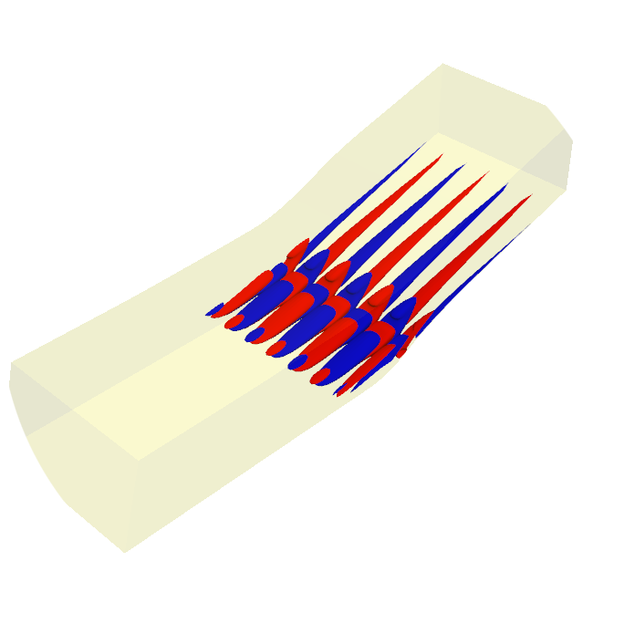

resolvent4py 
Getting Started
API-reference
References
Examples
Complex Ginzburg-Landau Equation
Toy Model
resolvent4py
Index
Index
A
|
B
|
C
|
D
|
E
|
G
|
H
|
L
|
M
|
P
|
R
|
S
|
V
|
W
A
apply() (resolvent4py.linear_operators.linear_operator.LinearOperator method)
(resolvent4py.linear_operators.low_rank.LowRankLinearOperator method)
(resolvent4py.linear_operators.low_rank_updated.LowRankUpdatedLinearOperator method)
(resolvent4py.linear_operators.matrix.MatrixLinearOperator method)
(resolvent4py.linear_operators.product.ProductLinearOperator method)
(resolvent4py.linear_operators.projection.ProjectionLinearOperator method)
apply_hermitian_transpose() (resolvent4py.linear_operators.linear_operator.LinearOperator method)
(resolvent4py.linear_operators.low_rank.LowRankLinearOperator method)
(resolvent4py.linear_operators.low_rank_updated.LowRankUpdatedLinearOperator method)
(resolvent4py.linear_operators.matrix.MatrixLinearOperator method)
(resolvent4py.linear_operators.product.ProductLinearOperator method)
(resolvent4py.linear_operators.projection.ProjectionLinearOperator method)
apply_hermitian_transpose_mat() (resolvent4py.linear_operators.linear_operator.LinearOperator method)
(resolvent4py.linear_operators.low_rank.LowRankLinearOperator method)
(resolvent4py.linear_operators.low_rank_updated.LowRankUpdatedLinearOperator method)
(resolvent4py.linear_operators.matrix.MatrixLinearOperator method)
(resolvent4py.linear_operators.product.ProductLinearOperator method)
(resolvent4py.linear_operators.projection.ProjectionLinearOperator method)
apply_mat() (resolvent4py.linear_operators.linear_operator.LinearOperator method)
(resolvent4py.linear_operators.low_rank.LowRankLinearOperator method)
(resolvent4py.linear_operators.low_rank_updated.LowRankUpdatedLinearOperator method)
(resolvent4py.linear_operators.matrix.MatrixLinearOperator method)
(resolvent4py.linear_operators.product.ProductLinearOperator method)
(resolvent4py.linear_operators.projection.ProjectionLinearOperator method)
arnoldi_iteration() (in module resolvent4py.linalg.eigendecomposition)
assemble_harmonic_resolvent_generator() (in module resolvent4py.utils.matrix)
assemble_reduced_order_tensors() (in module resolvent4py.model_reduction.balanced_truncation)
B
bv_add() (in module resolvent4py.utils.bv)
bv_conj() (in module resolvent4py.utils.bv)
bv_imag() (in module resolvent4py.utils.bv)
bv_real() (in module resolvent4py.utils.bv)
C
check_complex_conjugacy() (in module resolvent4py.utils.vector)
check_eig_convergence() (in module resolvent4py.linalg.eigendecomposition)
check_gmres_bjacobi_solver() (in module resolvent4py.utils.ksp)
check_if_complex_conjugate_structure() (resolvent4py.linear_operators.linear_operator.LinearOperator method)
check_if_real_valued() (resolvent4py.linear_operators.linear_operator.LinearOperator method)
check_lu_factorization() (in module resolvent4py.utils.ksp)
check_randomized_svd_convergence() (in module resolvent4py.linalg.randomized_svd)
compute_balanced_projection() (in module resolvent4py.model_reduction.balanced_truncation)
compute_gramian_factors() (in module resolvent4py.model_reduction.balanced_truncation)
compute_local_size() (in module resolvent4py.utils.comms)
compute_woodbury_operator() (resolvent4py.linear_operators.low_rank_updated.LowRankUpdatedLinearOperator method)
convert_coo_to_csr() (in module resolvent4py.utils.matrix)
create_AIJ_identity() (in module resolvent4py.utils.matrix)
create_dense_matrix() (in module resolvent4py.utils.matrix)
create_gmres_bjacobi_solver() (in module resolvent4py.utils.ksp)
create_intermediate_bv() (resolvent4py.linear_operators.low_rank_updated.LowRankUpdatedLinearOperator method)
create_intermediate_bv_hermitian_transpose() (resolvent4py.linear_operators.low_rank_updated.LowRankUpdatedLinearOperator method)
create_intermediate_bvs() (resolvent4py.linear_operators.product.ProductLinearOperator method)
create_intermediate_bvs_hermitian_transpose() (resolvent4py.linear_operators.product.ProductLinearOperator method)
create_left_bv() (resolvent4py.linear_operators.linear_operator.LinearOperator method)
create_left_vector() (resolvent4py.linear_operators.linear_operator.LinearOperator method)
create_mumps_solver() (in module resolvent4py.utils.ksp)
create_right_bv() (resolvent4py.linear_operators.linear_operator.LinearOperator method)
create_right_vector() (resolvent4py.linear_operators.linear_operator.LinearOperator method)
D
destroy() (resolvent4py.linear_operators.linear_operator.LinearOperator method)
(resolvent4py.linear_operators.low_rank.LowRankLinearOperator method)
(resolvent4py.linear_operators.low_rank_updated.LowRankUpdatedLinearOperator method)
(resolvent4py.linear_operators.matrix.MatrixLinearOperator method)
(resolvent4py.linear_operators.product.ProductLinearOperator method)
(resolvent4py.linear_operators.projection.ProjectionLinearOperator method)
distributed_to_sequential_matrix() (in module resolvent4py.utils.comms)
distributed_to_sequential_vector() (in module resolvent4py.utils.comms)
E
eig() (in module resolvent4py.linalg.eigendecomposition)
enforce_complex_conjugacy() (in module resolvent4py.utils.vector)
G
generate_random_petsc_sparse_matrix() (in module resolvent4py.utils.random)
generate_random_petsc_vector() (in module resolvent4py.utils.random)
get_block_cc_flag() (resolvent4py.linear_operators.linear_operator.LinearOperator method)
get_comm() (resolvent4py.linear_operators.linear_operator.LinearOperator method)
get_dimensions() (resolvent4py.linear_operators.linear_operator.LinearOperator method)
get_memory_usage() (in module resolvent4py.utils.miscellaneous)
get_mpi_type() (in module resolvent4py.utils.miscellaneous)
get_name() (resolvent4py.linear_operators.linear_operator.LinearOperator method)
get_nblocks() (resolvent4py.linear_operators.linear_operator.LinearOperator method)
get_real_flag() (resolvent4py.linear_operators.linear_operator.LinearOperator method)
H
hermitian_transpose() (in module resolvent4py.utils.matrix)
L
LinearOperator (class in resolvent4py.linear_operators.linear_operator)
LowRankLinearOperator (class in resolvent4py.linear_operators.low_rank)
LowRankUpdatedLinearOperator (class in resolvent4py.linear_operators.low_rank_updated)
M
mat_solve_hermitian_transpose() (in module resolvent4py.utils.matrix)
match_right_and_left_eigenvectors() (in module resolvent4py.linalg.eigendecomposition)
MatrixLinearOperator (class in resolvent4py.linear_operators.matrix)
module
resolvent4py.linalg.eigendecomposition
resolvent4py.linalg.randomized_svd
resolvent4py.linalg.resolvent_analysis_time_stepping
resolvent4py.linear_operators.linear_operator
resolvent4py.linear_operators.low_rank
resolvent4py.linear_operators.low_rank_updated
resolvent4py.linear_operators.matrix
resolvent4py.linear_operators.product
resolvent4py.linear_operators.projection
resolvent4py.model_reduction.balanced_truncation
resolvent4py.utils.bv
resolvent4py.utils.comms
resolvent4py.utils.io
resolvent4py.utils.ksp
resolvent4py.utils.matrix
resolvent4py.utils.miscellaneous
resolvent4py.utils.random
resolvent4py.utils.vector
P
petscprint() (in module resolvent4py.utils.miscellaneous)
ProductLinearOperator (class in resolvent4py.linear_operators.product)
ProjectionLinearOperator (class in resolvent4py.linear_operators.projection)
R
randomized_svd() (in module resolvent4py.linalg.randomized_svd)
read_bv() (in module resolvent4py.utils.io)
read_coo_matrix() (in module resolvent4py.utils.io)
read_dense_matrix() (in module resolvent4py.utils.io)
read_harmonic_balanced_bv() (in module resolvent4py.utils.io)
read_harmonic_balanced_matrix() (in module resolvent4py.utils.io)
read_harmonic_balanced_vector() (in module resolvent4py.utils.io)
read_vector() (in module resolvent4py.utils.io)
resolvent4py.linalg.eigendecomposition
module
resolvent4py.linalg.randomized_svd
module
resolvent4py.linalg.resolvent_analysis_time_stepping
module
resolvent4py.linear_operators.linear_operator
module
resolvent4py.linear_operators.low_rank
module
resolvent4py.linear_operators.low_rank_updated
module
resolvent4py.linear_operators.matrix
module
resolvent4py.linear_operators.product
module
resolvent4py.linear_operators.projection
module
resolvent4py.model_reduction.balanced_truncation
module
resolvent4py.utils.bv
module
resolvent4py.utils.comms
module
resolvent4py.utils.io
module
resolvent4py.utils.ksp
module
resolvent4py.utils.matrix
module
resolvent4py.utils.miscellaneous
module
resolvent4py.utils.random
module
resolvent4py.utils.vector
module
resolvent_analysis_rsvd_dt() (in module resolvent4py.linalg.resolvent_analysis_time_stepping)
S
scatter_array_from_root_to_all() (in module resolvent4py.utils.comms)
sequential_to_distributed_matrix() (in module resolvent4py.utils.comms)
sequential_to_distributed_vector() (in module resolvent4py.utils.comms)
solve() (resolvent4py.linear_operators.linear_operator.LinearOperator method)
(resolvent4py.linear_operators.low_rank_updated.LowRankUpdatedLinearOperator method)
(resolvent4py.linear_operators.matrix.MatrixLinearOperator method)
solve_hermitian_transpose() (resolvent4py.linear_operators.linear_operator.LinearOperator method)
(resolvent4py.linear_operators.low_rank_updated.LowRankUpdatedLinearOperator method)
(resolvent4py.linear_operators.matrix.MatrixLinearOperator method)
solve_hermitian_transpose_mat() (resolvent4py.linear_operators.linear_operator.LinearOperator method)
(resolvent4py.linear_operators.low_rank_updated.LowRankUpdatedLinearOperator method)
(resolvent4py.linear_operators.matrix.MatrixLinearOperator method)
solve_mat() (resolvent4py.linear_operators.linear_operator.LinearOperator method)
(resolvent4py.linear_operators.low_rank_updated.LowRankUpdatedLinearOperator method)
(resolvent4py.linear_operators.matrix.MatrixLinearOperator method)
V
vec_imag() (in module resolvent4py.utils.vector)
vec_real() (in module resolvent4py.utils.vector)
W
write_to_file() (in module resolvent4py.utils.io)